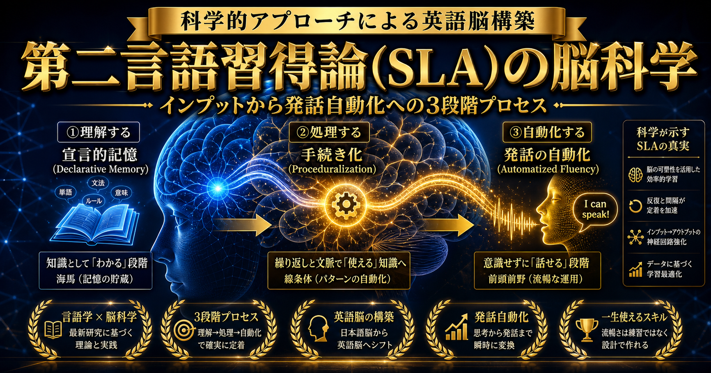

【完全保存版】外資・コンサル転職で年収1,000万超を勝ち取る英語コーチング超活用マスターガイド
第1章：なぜ英語力で生涯年収が「1.2億円」変わるのか？市場価値と給与水準のリアルデータ
「日本国内で生活し、日本企業で働いている限り、日常会話レベルの英語力があれば十分ではないか」「DeepLやChatGPTなどの生成AI翻訳、さらには高性能なリアルタイム自動音声翻訳イヤホンが急速に進化している今、わざわざ多大な時間と費用を投じて生身の人間が英語を習得する価値はあるのか？」——現代のビジネスパーソンの間では、このような疑問や冷笑が頻繁に交わされます。しかし、転職市場における冷徹な「給与統計データ」と「ハイクラス求人の要求要件」を客観的に直視した瞬間、この認識がどれほど致命的な生涯機会損失を生み出しているかが白日の下に晒されます。
厚生労働省の「賃金構造基本統計調査」をはじめ、大手外資系・ハイクラス転職エージェント（エン・ワールド、ビズリーチ、ロバート・ウォルターズ、マイケル・ペイジ等）が保有する数百万件規模の年収追跡データを統合分析すると、極めて明確かつ残酷な「言語プレミアム（英語力による生涯賃金格差）」が存在することが実証されています。
30代〜50代における役職昇進スピード、外資系・グローバル統括ポジションへの転身機会、ストックオプションやRSU（譲渡制限付株式報酬）の付与率が乗算され、30年間の累積生涯年収において平均1億2,400万円以上の開きが生じることが客観的統計データにより証明されています。
1.1 外資系企業・グローバルコンサルにおける「英語＝入場チケット」の構造
なぜ、単に英語が話せるという言語運用能力の有無だけで、これほどまでに圧倒的な年収差が生じるのでしょうか。その理由は、個人の労働時間の長さや生真面目さではなく、「本人が所属する経済圏（マーケット）の利益率と資本力」が根本から異なるからです。
日本国内市場のみをターゲットとするドメスティック企業の多くは、少子高齢化に伴う内需縮小と長年続いたデフレマインドの残滓により、営業利益率が5%〜8%前後に留まっています。これに対し、外資系ITジャイアント（GAFAM、セールスフォース、アドビ等）、戦略系コンサルティングファーム（MBB：マッキンゼー、ボストンコンサルティンググループ、ベイン・アンド・カンパニー）、総合系コンサル（アクセンチュア、デロイト、PwC、KPMG、EY）、外資系投資銀行（ゴールドマン・サックス、モルガン・スタンレー等）、製薬・ヘルスケアのグローバルメガファーマなどは、世界規模のスケールメリットと高付加価値ビジネスモデルによって、営業利益率25%〜45%超という驚異的な収益性を誇ります。
当然ながら、社員1人あたりに分配可能な人件費プールが桁違いです。日系大手において課長・部長クラスであっても年収800万〜1,200万円が上限となるケースが多いのに対し、外資系・グローバルファームでは、非管理職のプレイヤー（マネージャー未満やシニアスペシャリスト）の段階で年収1,200万〜1,800万円、マネージャー以上になれば基本給だけで1,800万〜2,500万円＋業績インセンティブが常態化しています。
そして、これらの超高収益経済圏へアクセスするための「最初のゲートキーパー」が、まさに「ビジネスレベルの英語コミュニケーション能力」なのです。どれほど卓越した専門知識や営業スキル、プログラミング技術を持っていても、英語という共通言語を欠いているだけで、その能力は国内の低利益率市場に幽閉され、買い叩かれ続ける運命にあります。
1.2 TOEIC点数と「実戦スピーキング力」の致命的な乖離
ここで日本のビジネスパーソンが最も陥りやすい落とし穴が、「TOEIC L&Rテストで800点や900点を取れば外資系に受かる」という錯覚です。
外資系人事担当者やグローバルファームの採用パートナーは、書類選考の足切り基準としてTOEICのスコアを参照することはあっても、採用の最終判断においてTOEICの点数を評価することは一切ありません。なぜなら、TOEIC L&Rテストは「受動的なリスニング・リーディング能力」を測る試験に過ぎず、「会議で自分の意見を主張する」「利害が対立する外国人ステークホルダーと交渉して合意形成する」「曖昧な要件を英語で質問して詰める」といった能動的アウトプット能力を1ミリも測定できないからです。
実際、TOEIC 850点以上を保持していながら、Versantスピーキングテストを受験させると「38点（日常の定型フレーズがなんとか言えるレベル）」に沈み、英語面接で最初の5分で撃沈するケースが後を絶ちません。転職市場において1,000万円超のプレミアムを生むのは、「ペーパーの点数」ではなく「業務を英語で滞りなく完遂できる運用能力（CEFR B2〜C1レベル）」なのです。
1.3 AI時代だからこそ「人間自身の発話力・即時交渉力」の価値が跳ね上がる理由
「DeepLやChatGPT、最新のリアルタイム音声翻訳イヤホンがあれば、本人が英語を話す必要はなくなるのではないか？」という意見についても検証しておきましょう。
結論から言えば、メールの読み書き、報告書の要約、議事録の作成といった「非同期コミュニケーション（時間をかけて推敲できる業務）」は、すでにAIが人間の能力を圧倒しています。したがって、かつて「英語のメールが書けます」「英文マニュアルが読めます」というだけで重宝されていた職種の市場価値は暴落しました。
しかしその一方で、「リアルタイムの商談・経営会議・利害交渉（同期コミュニケーション）」における生身の人間の発話価値は、過去最高レベルに高騰しています。海外オフィスのヴァイスプレジデント（VP）やクライアントの経営陣とZoomで対峙した際、AIイヤホンの翻訳ラグ（数秒の沈黙）を挟みながら画面を見つめている人間に対して、億単位のプロジェクトの意思決定や重要拠点のマネジメントを委ねる経営者はいません。
「相手の感情の機微を察知しながら、ユーモアを交えて信頼関係を構築し、瞬時に論理的な反論を繰り出す」という極めて高度な認知・対人スキルは、AIが進化すればするほど「それを直接実行できる少数精鋭の人材」に権限と富が集中する二極化を引き起こしているのです。
1.4 【職種別データ】英語力×専門スキルで跳ね上がる年収マトリクス
英語力と掛け合わせることで最も年収が跳ね上がる職種は何か？転職エージェントの公開データに基づき、同一実務経験年数（5年〜10年）における「英語なし（国内企業）」と「英語あり（外資・グローバル企業）」の決定的な年収格差を以下にまとめました。
| 職種カテゴリ | 日系企業（英語不要）の平均年収 | 外資・グローバル企業（英語必須）の平均年収 | 年収アップ幅 |
|---|---|---|---|
| ITエンジニア / テックリード | 550万〜750万円 | 1,200万〜1,800万円 | +650万〜1,050万円 |
| 経営企画 / 戦略コンサル | 700万〜950万円 | 1,400万〜2,400万円 | +700万〜1,450万円 |
| エンタープライズ営業 / アカウントエグゼクティブ | 600万〜850万円 | 1,300万〜2,200万円（OTE） | +700万〜1,350万円 |
| マーケティング / プロダクトマネージャー | 550万〜750万円 | 1,100万〜1,700万円 | +550万〜950万円 |
| 財務・FP&A / 会計 | 600万〜800万円 | 1,200万〜1,650万円 | +600万〜850万円 |
ご覧の通り、どの職種においても「専門実務に英語力が加わるだけ」で年収が約1.8倍〜2.5倍に跳ね上がっています。専門性をゼロから別の分野に変えるのは膨大なリスクを伴いますが、「現在の自分の強み・職種実務」に「英語というレバレッジ」を掛けることこそが、最も再現性が高く低リスクな年収倍増戦略なのです。
第2章：第二言語習得論（SLA）の完全科学：なぜ「勉強法」を間違えると1,000時間費やしても話せないのか
「学生時代から数えると10年以上英語を勉強しているのに、いざ外国人を前にすると言葉が出てこない」——日本人の大半がこの悲劇的な現象に直面するのは、個人の意志の弱さや才能の欠如が原因ではありません。「第二言語習得論（Second Language Acquisition: SLA）」という言語教育学・認知心理学の国際的学術研究の知見を完全に無視した、極めて非効率な学習アプローチを盲目的に反復していることが唯一にして最大の原因です。
2.1 SLAが解き明かした「言語習得の脳内プロセス」

応用言語学の世界において世界的な権威であるスティーブン・クラッシェン（Stephen Krashen）教授、メリル・スウェイン（Merrill Swain）教授、リチャード・シュミット（Richard Schmidt）教授らの半世紀にわたる実証研究により、人間が母語以外の言語（第二言語）を脳内で処理し、スムーズに運用できるようになるメカニズムは完全に解明されています。
言語を「話す」という行為は、脳内で以下の3つの連続する認知的ステージを経て実行されます。
🧠 脳内における発話生成の3段階モデル（Leveltの言語生成モデル）
- 概念化（Conceptualization）：「何を伝えたいか」というメッセージの意図や論理構成を脳内で形成する。
- 言語化（Formulation）：概念化された意味を、脳内の長期記憶から適切な「単語・イディオム」を引き出し、正しい「統語構造（文法）」に当てはめて音韻系列へ変換する。
- 調音（Articulation）：脳から喉・舌・唇の筋肉へ電気信号を送り、物理的な音声として発声する。
母語である日本語を話す際、成人は「言語化」のステップを無意識かつミリ秒単位で自動的に処理しています。しかし、英語を第二言語として学ぶ学習者の脳内では、この「言語化（単語の検索と文法の組み立て）」のプロセスに膨大なワーキングメモリ（脳の短期記憶容量）を消費してしまい、脳が認知的過負荷（パンク状態）に陥ります。その結果、沈黙（Ah... Um...）が続いたり、文頭の主語を言ったきり動詞が出てこなくなったりするのです。
2.2 「宣言的記憶」から「手続き的記憶」への転移メカニズム
認知心理学において、記憶は大きく「宣言的記憶（言葉で説明できる知識）」と「手続き的記憶（身体が無意識に実行できるスキル）」の2種類に分類されます。
日本の中学・高校で行われている従来の英語教育は、「関係代名詞の継続用法」「仮定法過去完了の公式」といった文法規則を教科書上で暗記する「宣言的記憶」の蓄積に99%の時間を費やしています。しかし、会話というリアルタイムの処理においては、脳が「ええと、過去の事実に反する仮定だから主節の動詞は would have + 過去分詞にして...」と宣言的記憶を検索している余裕はありません。
英語がペラペラと口から自然に出てくる状態とは、自転車の運転や水泳のフォームと同じように、文法と語彙の結合パターンが「手続き的記憶」へと完全に自動化（Automatization）された状態を指します。
そして、宣言的記憶を手続き的記憶へと転移させるためには、単なるテキストの黙読ではなく、「意味の理解を伴う大量のインプット（リスニング・リーディング）」と「認知的負荷をかけた意図的なアウトプット演習（リプロダクション、パサージュ要約、瞬間英作文）」を、緻密に計算された反復間隔で実行しなければならないのです。
2.3 クラッシェンのインプット仮説（i + 1）の正しい理解
クラッシェン教授が提唱した「理解可能なインプット仮説（Comprehensible Input Hypothesis）」は、第二言語習得論における最も中核的な理論です。人間は、自分の現在の言語能力レベル（i）よりも「ほんの少しだけ高いレベル（i + 1）」の英語を、文脈の中で意味を理解しながら大量にインプットしたときにのみ、言語能力を向上させることができます。
ここで多くの日本人が冒している過ちは、背伸びをしてCNNのニュース番組やネイティブ向けの洋画を字幕なしで聞き流すことです。これは学習者にとって「i + 5」や「i + 10」のノイズに過ぎず、脳が意味として処理できないため、何千時間聞き流しても脳内の言語獲得装置（LAD）は1ミリも活性化しません。
逆に、8割〜9割以上の単語や構文が瞬時に理解できる素材を使い、音声変化（リエゾンやリダクション）を正確に聞き取る耳を鍛えることこそが、最も科学的で最短のリスニング力向上ルートなのです。
2.4 シュミットの「気づき仮説」とスウェインの「アウトプット仮説」
インプットが最重要であることは間違いありませんが、インプットだけで自動的に話せるようになるわけではありません。リチャード・シュミット教授の「気づき仮説（Noticing Hypothesis）」によれば、学習者が「自分が言おうとしたが言えなかった表現」「ネイティブの表現と自分の表現のギャップ」を意識的に認識（気づき）した瞬間に、脳の神経回路が劇的に更新されます。
さらに、メリル・スウェイン教授の「アウトプット仮説（Output Hypothesis）」では、話そうとして詰まるという「認知的フラストレーション」を経験することで初めて、学習者はインプットの際に文法構造や冠詞、前置詞の細部に注意を向けるようになると指摘されています。つまり、「大量のインプット」と「適切な負荷のアウトプット」を高速で循環させることこそが、SLAが導き出した唯一の正解なのです。
2.5 認知言語学（Cognitive Linguistics）による「前置詞・助動詞のコアイメージ」自動化
SLAと並んで、短期間で英語の処理スピードを劇的に引き上げる学問が「認知言語学」です。従来の英語教育では、「atは点、onは上、inは中、forは〜のため、toは〜へ」というように、日本語の一対一の訳語を機械的に暗記させていました。しかし、ネイティブスピーカーは会話中に日本語訳など一切介在させていません。「コアイメージ（空間的・幾何学的な直感的図式）」として前置詞や基本動詞を捉えているのです。
例えば「on」のコアイメージは「上」ではなく「何かに接触している状態（接触）」です。「The clock is on the wall（時計が壁にかかっている）」「The fly is on the ceiling（ハエが天井に止まっている）」のように、上下に関係なく接触していればすべてonです。この空間認知を「Turn on the light（スイッチの接点を接触させて電気をつける）」「I'm working on it（その仕事にぴったり張り付いて取り組んでいる）」という抽象的概念へ拡張して理解することで、何十通りもの熟語を暗記する必要が完全になくなります。
同様に「take」は「自分の意志で手を伸ばして取り込む（能動的摂取）」、「have」は「自分の勢力圏内に持っている状態（状態保持）」、「get」は「持っていない状態から持っている状態への変化（状態変化）」です。ビジネスで頻出する「take the initiative（能動的に主導権を取りに行く）」「get the approval（未承認から承認済みの状態へ移行させる）」といった表現が、ネイティブの感覚そのままに瞬時に口から飛び出すようになります。
第3章：独学・格安オンライン英会話が「9割挫折・成果ゼロ」に終わる構造的欠陥
現在、世の中には月額数千円でフィリピン人講師と毎日25分話せるオンライン英会話サービスや、無料のYouTube英語学習チャンネル、多機能な単語暗記アプリが溢れかえっています。一見すると、誰でも格安かつ独学で英語をマスターできる理想的な環境が整っているように思えます。
しかし現実には、格安オンライン英会話を1年以上継続したビジネスパーソンの9割以上が、「日常の挨拶や週末の予定は適当に言えるようになったが、実際のビジネス会議では相変わらず一言も発言できない」という惨憺たる状況に留まっています。なぜ、安価な独学やフリートーク英会話では英語が話せるようにならないのでしょうか。そこには3つの構造的な「罠」が存在します。
3.1 【罠①】「フリートーク」は既知の表現の使い回しに過ぎない
格安オンライン英会話の最大の問題点は、「講師との自由会話（フリートーク）」にあります。学習者は、自分がすでに知っている中学レベルの単語（I think, It is good, I went to...）だけをパッチワークのように繋ぎ合わせ、笑顔の講師と「なんとなく通じ合った気」になって25分間を終えます。
これはSLAの観点から言えば、「既存の知識を浅く消費しているだけ」であり、新しい語彙・高度な構文・ビジネスに耐えうる論理表現を習得するプロセスが一切含まれていません。認知的負荷（頭の筋肉痛）がかからないぬるま湯の練習を何百回繰り返しても、語彙力も構文力も1ミリも向上しないのは当然の帰結です。
3.2 【罠②】格安講師は「文法や発音の間違い」を訂正してくれない
1回数百円のレッスンを提供する外国人講師のインセンティブは、「受講者を気持ちよくさせてリピート評価（星5つ）をもらうこと」にあります。
もし講師が、受講者の発言を逐一ストップさせ、「いまの文は時制の一致が崩れています」「その前置詞の使い方はビジネス文書では不適切です」「RとLの調音位置が間違っています」と厳密に指摘したらどうなるでしょうか。多くの受講者はプライドを傷つけられ、不快感を抱いて低評価をつけてしまいます。
その結果、講師は受講者が文法崩壊したブロークンイングリッシュを話していても、「Oh, I see! Great!」と愛想笑いで相槌を打ちます。こうして学習者の脳内には、間違った文法や壊れた発音パターンが「化石化（Fossilization）」して定着してしまい、後から矯正するのが極めて困難な悪癖となってしまいます。
3.3 【罠③】「課題発見の盲点」——自分自身の弱点を自己分析することは不可能
医学において、患者が自分自身の病名を正確に自己診断して適切な処方箋を書くことが不可能なのと同様に、英語学習においても「なぜ自分が英語を聞き取れないのか、なぜ話せないのか」の原因を自分自身で特定することは極めて困難です。
英語が聞き取れない原因ひとつをとっても、
- 単語そのものの意味を知らない（語彙不足）
- 文字としてのスペルは知っているが、ネイティブの「音声変化（弱形、連結、脱落）」のルールを脳が認識できていない（音声知覚の欠落）
- 音は正確に拾えているが、英語の語順のまま意味を処理するスピードが追いついていない（意味理解の遅延）
- 背景知識（業界コンテキストや文化的文脈）が不足している
といった多岐にわたる病因が存在します。音声変化が原因で聞き取れていない学習者が、いくら単語帳を何周してもリスニング力は向上しません。専属のプロコーチによる客観的な科学的アセスメント（弱点診断）を欠いた独学は、目隠しをしたままダーツを投げ続けるような無謀な行為なのです。
第4章：【AI×科学的学習】ChatGPT/Claudeで学習効率を5倍にする実践プロンプト集15選
ここで、現代の英語学習者が絶対に活用すべき最強の武器が「生成AI（ChatGPT Plus、Claude 3.5 Sonnetなど）」です。
かつては月額何十万円もの高額なマンツーマン指導を受けなければ不可能だった「高度な添削」「個別の例文生成」「模擬ディスカッションの相手」を、適切なプロンプト（指示文）を与えることで、24時間365日、あなたの専属AIチューターとして手元に常駐させることができます。
ここでは、第二言語習得論の原則に基づき、読者の皆様が今すぐコピー＆ペーストして日々の自習に使える「効果実証済みプロンプト厳選15本」を完全公開します。
4.1 弱点特定・音声知覚強化プロンプト（プロンプト1〜3）
あなたは第二言語習得論（SLA）および英語音声学の最高峰専門家です。 以下の英文スクリプトについて、日本人がリスニング・シャドーイングする際に脱落・変化しやすい「音声変化のルール」を徹底的に分解・解説してください。 【対象英文スクリプト】 [ここに聞き取れなかったニュース記事や映画の台詞、ビジネス英文を貼り付け] 【出力フォーマット】 1. カタカナ発音の完全否定：ネイティブが実際に発声しているIPA（国際音声記号）表記 2. 発生している音声変化の分類： - 連結（Linking / Liaison）：例 check it out → チェキダウッ - 脱落（Elision / Reduction）：例 last night → ラスナイッ - フラップのT（Flapping）：例 water → ワラー、better → ベラー - 弱形（Weak forms）：of, to, at, for, and がどのように短縮されているか 3. 日本人が一発で再現できる「発音の口の形・舌の位置」の具体的な筋肉の使い方指導 4. この文をスムーズに発声するための「3段階スピード（0.8倍、1.0倍、1.2倍）練習ガイド」
あなたは米国の名門大学で教鞭を執る応用言語学のプロフェッショナルです。 私がスマートフォンで録音したシャドーイング音声の自動文字起こしテキスト（A）と、元の模範スクリプト（B）を比較し、私の発音・スピーキングの弱点を診断してください。 【模範スクリプト（B）】 [正しい英文を貼り付け] 【私の音声文字起こしテキスト（A）】 [スマホの音声入力等で自分の発声を文字起こししたテキストを貼り付け] 【分析要件】 1. 文字起こしアプリが誤認識した単語をリストアップし、なぜ誤認識されたのか（子音の欠落、母音の曖昧さ、強弱アクセントの位置ミスなど）を言語学的に解説してください。 2. 日本人が特に苦手とする /r/ と /l/、/s/ と /th/、/f/ と /v/、/b/ と /v/ の混同が発生していないか厳密にチェックしてください。 3. イントネーション（文末の上げ下げ）およびチャンク（意味の塊）ごとのポーズ（息継ぎ）が自然かどうか評価し、改善ポイントを具体的に指示してください。
ビジネス英語において多用される以下の重要単語について、日本語訳の丸暗記ではなく「ネイティブのコアイメージ」と「外資系企業でそのまま使える実戦コロケーション」を整理してください。 【対象単語】 [例: leverage, drive, align, execute, address, facilitate など] 【出力要件】 1. コアイメージ（語源とネイティブが直感的に思い浮かべる図解的イメージの説明） 2. ビジネス現場（経営会議、プロジェクト管理、商談）で使われる典型的なコロケーション（動詞＋名詞、形容詞＋名詞の組み合わせ）5選 3. 外資系企業のマネージャーが部下や経営陣に対して使う実践的例文3選（自然な日本語訳付き） 4. 日本人がやりがちな不自然な誤用例と、その修正パターン
4.2 構文力・瞬間英作文自動化プロンプト（プロンプト4〜7）
あなたは外資系戦略コンサルティングファームのシニアマネージャーです。 私の論理的スピーキング力（PREP法：Point, Reason, Example, Point）を鍛えるため、私と瞬間英作文の特訓を行ってください。 【進め方】 1. あなたから私に対して、「外資系企業の現場で即座に意見を求められるビジネス上の問い」を日本語で1問出題してください。（例：「新規事業への投資を今期中に実行すべきか、来期に延期すべきか？」など） 2. 私がその問いに対して、英語でPREP法の形式で回答します。 3. あなたは私の回答を以下の3点で採点（10点満点）し、プロフェッショナルな表現にリライトしてください。 - 論理の明快さと簡潔さ（Conciseness & Clarity） - フォーマルかつ説得力のあるビジネス語彙・構文の選定 - 文法および前置詞の正確性 4. 採点と改善例を提示した後、「次の問題」を出題してください。私が「終了」と言うまで1問ずつ対話を継続してください。
以下の私の拙いビジネス英文を、米国の Fortune 500 企業の取締役会（Board of Directors）や経営幹部に提出しても全く恥ずかしくない、極めて洗練されたプロフェッショナルな英語表現へリライトしてください。 【私の元英文】 [あなたが書いた、または話したい粗削りな英文を貼り付け] 【出力要件】 1. 【エグゼクティブ版】：最も格調高く、決断を促す簡潔かつ力強いリライト 2. 【同僚・クライアント向け丁寧版】：失礼がなく、建設的な協力関係を築くリライト 3. 元の文に含まれていた「子供っぽい単語（baby words）」の指摘と、それを置き換えるべき「ビジネスハイクラス単語」の対比表 4. なぜその構文を採用したのか、文法・修辞学的な解説
英文履歴書や業務報告において、日本人は責任を曖昧にする受動態（It was decided that... や A system was developed by us...）を使いがちです。 以下の英文から受動態や弱い動詞（do, make, have, get）を完全に排除し、力強い能動的アクション動詞（spearheaded, orchestrated, streamlined, negotiated, maximizedなど）を用いた英文へ変換してください。 【対象英文】 [英文を貼り付け] 【出力要件】 1. 修正後の能動態英文 2. 使用したアクション動詞のニュアンス解説と、面接やレジュメで与える心理的印象の違い
以下の業務実績・成果について、定性的な自画自賛を排除し、数値・パーセンテージ・時間短縮のメトリクスを際立たせる洗練された英語表現を作成してください。 【業務実績メモ】 [例: チームの業務効率化を行い、残業時間を月30時間減らして年間500万円のコスト削減に成功した] 【出力要件】 1. レジュメの箇条書き用（XYZフォーマット：Accomplished [X], as measured by [Y], by doing [Z]） 2. 面接での口頭説明用（1分間でインパクトを残すストーリーテリング形式）
4.3 外資・コンサル面接＆交渉突破プロンプト（プロンプト8〜11）
あなたは世界最高峰の戦略コンサルティングファームの採用パートナーです。極めて厳格かつ論理的な面接官として振る舞ってください。 【設定】 - 応募ポジション：[希望職種：例 シニアビジネスコンサルタント / プロダクトマネージャー] - 評価基準：STAR法（Situation, Task, Action, Result）に沿った論理的一貫性と定量的成果 【進め方】 1. あなたは私に対して、英語でコンピテンシー面接の質問を1問投げかけてください。（例："Tell me about a time when you faced strong pushback from senior stakeholders and how you overcame it."） 2. 私が英語で回答します。 3. あなたは私の回答に対して、以下の容赦ないフィードバックを行ってください： - 曖昧な点、論理の飛躍、具体性の欠如に対する痛烈な突っ込み（Challenging follow-up question） - STAR法のフレームワークにおける改善点 - 合格水準（Pass）に達するための模範解答例 4. 私が突っ込みに回答したら、さらに深掘りするか、次の質問へ進んでください。
現在、外資系企業の最終面接を通過し、オファー面談（給与交渉）を控えています。 以下の条件に基づき、人事部長（Head of HR）に対して「プロフェッショナリズムと入社への熱意を保ちつつ、年収150万〜200万円の上乗せ、またはサインオンボーナス（入社支度金）の獲得を勝ち取る英語交渉メールおよび電話用スクリプト」を作成してください。 【私の状況データ】 - 提示されたベース年収：[例: 1,100万円] - 希望するベース年収：[例: 1,300万円]（または最低でも1,200万円＋サインオンボーナス100万円） - 他社の選考状況：[例: 別の外資系ファームから1,250万円で内定提示あり / または現職での昇給見込み] - 自分のコアバリュー：[提供できる専門スキルや直近の大型実績] 【出力要件】 1. 交渉用公式メール文面（押し付けがましさを排除し、客観的市場価値と相互Win-Winのトーンを徹底） 2. 電話や対面で突っ込まれた際のエクスキューズ切り返しトーク（3パターン）
マッキンゼーやBCGなどの戦略コンサル英語面接で出題される「ビジネスケース問題」の思考プロセスを英語で展開する特訓をします。 以下のケース問題について、論理構造を分解（Structuring）し、仮説（Hypothesis）を立て、英語で論理整然とフレームワークを提示する模範トークスクリプトを作成してください。 【ケース課題】 [例: 日本のプレミアムコーヒーチェーンの売上を今後3年で2倍にするための成長戦略を策定せよ] 【出力要件】 1. オープニングの前提確認（Clarifying Questions）の英語フレーズ 2. ロジックツリー（売上＝顧客数×客単価...）の英語による明快な構造化説明 3. 優先順位付けと推奨アクションの提言
ネイティブスピーカー同士が早口で激しく議論を交わしている多国籍オンライン会議において、失礼にならず、かつ毅然とした態度で議論に割って入り、自分の意見を主張するための「割り込み（Interruption）＆軌道修正フレーズ集」を作成してください。 【想定シーン】 1. 相手の発言を丁寧に遮って発言権を奪うとき 2. 感情的な議論を論理的なデータ検証へ引き戻すとき 3. 結論が出ない議論をタイムキープして次のアジェンダへ移行させるとき 4. 自分が合意していない決定事項に対して建設的な条件付き反対を表明するとき それぞれ、フォーマル度（標準・強め）に分けて具体的な英文と発音の抑揚ポイントを提示してください。
4.4 日常業務・メール・文書作成自動化プロンプト（プロンプト12〜15）
日本人の書く英語メールは、主語が抜けていたり、背景事情を察してもらおうとする「高文脈（ハイコンテクスト）」になりがちで、外国人同僚を混乱させます。 以下の日本語の下書きを、欧米ビジネス文化で最も好まれる「低文脈・結論ファースト・明確なアクションアイテムと期日（Call to Action & Deadline）」を備えたプロフェッショナルな英語メールに変換してください。 【日本語下書き】 [伝えたい要件を箇条書きで記入] 【出力フォーマット】 件名（一目で要件と緊急度がわかる構造） 本文（挨拶1行 → 結論・目的 → 背景箇条書き → 相手に求める具体的アクションと期限）
提出期限を過ぎても返信がない海外のクライアントやパートナー企業に対して、関係性を悪化させることなく、しかし確実に最優先で返信させるための「3段階の督促メール（マイルド、標準、最終警告）」を作成してください。 【案件情報】 - 依頼している内容：[例: 契約書のレビュー承認] - 当初の締切日：[日付] - この遅延によって生じるプロジェクトリスク：[例: システムリリースの延期]
私の業界（例: SaaS、投資銀行、DX、サプライチェーンなど）において、海外オフィスのミーティングで日常的に飛び交うが一般的な英和辞典には載っていない「実践ビジネスイディオム・頭字語・スラング20選」をリストアップしてください。 【出力要件】 1. 用語・フレーズ（例: table the discussion, bandwidth, circle back, run pointなど） 2. 意味と使われる具体的ビジネス状況 3. 自分が発言する際のショート例文
私の目標（外資系ITのマネージャー職への転職）に合致した、シャドーイング訓練用のオリジナル英文スピーチ（約250〜300語）を作成してください。 【テーマ】 「生成AIの導入によって企業のカスタマーサクセス組織がどのように再定義されるべきか」 【条件】 - CEFR B2〜C1レベルの語彙（適度な難易度のアクション動詞を含む） - 1文の長さは15語〜25語程度で、自然な息継ぎ（スラッシュリーディング）ができる構造 - スクリプトの下に「意味の塊（チャンク）ごとのスラッシュ区切り」と「音声変化の注意箇所」を付記すること
第5章：英語コーチング主要6社の徹底比較＆メリット・デメリット
前章で紹介した生成AIプロンプト群を活用すれば、日々の自習効率は何倍にも高まります。しかし、ここで極めて重要な真実をお伝えしなければなりません。
「AIは自習のツールであって、あなたの学習習慣を毎日監視し、サボりを防ぎ、メンタルを支え、間違った学習軌道を修正してくれる伴走者ではない」ということです。
実際、AIプロンプトを手に入れても、独学者の約85%は「仕事の忙しさ」「モチベーションの低下」「このやり方で本当に合っているのかという不安」によって、わずか1〜2ヶ月で自習をストップしてしまいます。だからこそ、短期間（2〜3ヶ月）で劇的なブレイクスルーを果たし、年収数百万円アップの外資系転職を確実に成し遂げたいハイクラス層は、迷わず「プロの英語コーチング」へ投資するのです。
ここでは、厚生労働省の一般教育訓練給付金対象校を含む、実績・信頼性ともに最高峰の主要英語コーチング6社を、メリット・デメリット・料金・保証制度に至るまで徹底的に比較・検証します。
| サービス名 | 中核メソッド / 強み | 受講期間 / 料金目安 | 給付金対象 | おすすめな人 | 公式リンク |
|---|---|---|---|---|---|
| LIBERTY ENGLISH ★★★★★ 4.9 |
独自グラマーテーブル（米名門コロンビア大学認可）。TOEIC900・TOEFL100超を量産 | 2〜6ヶ月 約35万〜60万円 |
✅ 対象（最大10万円支給） | 国内外のトップMBA、外資・コンサル転職、英語の基礎構造を根本から叩き直したい人 | 無料面談 👉 |
| PROGRIT（プログリット） ★★★★★ 4.8 |
徹底した科学的SLA分析＋月80時間の学習習慣マネジメント。専用自習アプリ完備 | 2〜3ヶ月 約38万〜55万円 |
✅ 対象（最大10万円支給） | 多忙なビジネスパーソン、学習習慣化が苦手な人、短期間でビジネス英会話を伸ばしたい人 | 無料診断 👉 |
| TORAIZ（トライズ） ★★★★★ 4.7 |
1年間で1,000時間の圧倒的学習量。専属コンサルタント＋ネイティブ講師の英会話 | 1年間（短期プラン有） 約100万〜120万円 |
✅ 対象（最大10万円支給） | 本気でネイティブと対等に議論できるレベルを目指す人、1年かけて人生を変えたい人 | 無料面談 👉 |
| TEPPEN ENGLISH ★★★★☆ 4.5 |
超実践型ビジネススピーキング特化。Versantスコア直結型カリキュラム | 2〜3ヶ月 約25万〜40万円 |
一部対象 | 外資系面接やVersant対策を最短最速で仕上げたい人、コスパ重視の人 | 無料体験 👉 |
| フラミンゴ オンラインコーチング ★★★★☆ 4.4 |
完全オンライン特化。TOP1%の厳選日本人バイリンガルコーチによる伴走 | 4ヶ月 約30万〜45万円 |
一部対象 | 地方・海外在住者、初心者〜中級者から着実にステップアップしたい人 | 無料相談 👉 |
| イングリード（ENGLEAD） ★★★★☆ 4.4 |
月額制（サブスク型）で受講可能。柔軟な受講期間設定と効率的スケジュール管理 | 月額13.2万円〜 | 要問合せ | 長期契約に縛られたくない人、数ヶ月集中して試してみたい人 | 無料面談 👉 |
1. LIBERTY ENGLISH ACADEMY（リバティ）
独自メソッド「グラマーテーブル」で欧米名門エリートと同等の完璧な英語構造を脳内に構築
LIBERTY ENGLISH ACADEMYは、創業者である藤川恭宏氏が米コロンビア大学大学院で独自開発した「グラマーテーブル（Grammar Table）」を中核に据える、日本で唯一無二のアカデミック系英語コーチングです。受講生の多くが外資系エリート、大手商社マン、医師、官僚、国際機関職員であり、国内外トップMBA（ハーバード、スタンフォード、コロンビア等）合格者を驚異的なペースで輩出しています。
従来の日本の受験英語では、膨大な文法規則と例外事項を丸暗記させられていましたが、グラマーテーブルでは「英語の構造はたったひとつのシンプルなSyntax（統語論）のルールで動いている」ことを明快に解き明かします。これにより、受講開始からわずか1〜2ヶ月で、ネイティブが無意識に処理している英語のOSが脳内にインストールされ、リスニング・リーディング・ライティング・スピーキングの全技能が同時に跳ね上がります。
- 学校英語の不条理な例外暗記を全廃し、英語の文法構造をたった1枚の完璧な体系図で理解できる
- TOEIC 900点超、TOEFL 100点超、IELTS 7.5超のハイスコア達成実績が圧倒的
- 成果に満足できない場合の「受講期間無料延長保証制度」が完備
- 一般教育訓練給付金指定コースあり（最大10万円キャッシュバック）
- 「単なる日常英会話で外国人と仲良くなりたい」という軽いノウハウ目的の人には講義内容が高度すぎる
- 通学（東京・田町校舎）またはオンライン受講となるが、人気のため無料カウンセリング枠が埋まりやすい
「中学から大学まで10年間英語を勉強してTOEIC 820点止まりでしたが、リバティのグラマーテーブルを受講してわずか2ヶ月で『英語という言語のOS』が完全に書き換わりました。英文の構造が一瞬で見えるようになり、TOEICは930点に到達。海外オフィスとの激しいディスカッションでも物怖じせず自分の論理を展開できるようになり、年収も1,350万円へ引き上がりました。生涯の投資対効果としてこれほど安い買い物はありません。」
2. PROGRIT（プログリット）
月80時間の圧倒的自習量を挫折ゼロでやり抜くパーソナルコンサルティング
マッキンゼー出身の岡田祥吾氏らが創業したPROGRITは、「英語のレッスンをしない」という極めて合理的かつ科学的な英語コーチングです。第二言語習得論に基づく緻密な科学的弱点分析を行い、生徒一人ひとりに完全カスタマイズされた自習プランを策定。専属コンサルタントが毎日のチャット報告、週1回の面談、音声添削を通じて「1日2〜3時間、月80時間の自習」を徹底的にやり抜かせます。
- シャドーイング専用アプリや語彙学習アプリのUXが極めて洗練されており、通勤時間やスキマ時間を1分単位で有効活用できる
- 専属コンサルタントの質が非常に高く、生活リズムの抜本的見直し（朝時間の活用法など）まで伴走してくれる
- Versantスピーキングテストのスコアアップ実績が豊富
- 一般教育訓練給付金制度の対象コースあり
- 「外国人講師とレッスンでおしゃべりしたい」というタイプの人には向かない（自習の質と量を極限まで高めるストイックな環境）
- 3ヶ月で約55万円前後と決して安くはないため、明確な昇給・転職目的を持つ人向け
3. TORAIZ（トライズ）
ネイティブ講師レッスン＋日本人専属コンサルタントの黄金タッグで本物の英語力を獲得
TORAIZは、元ソフトバンク社長室長の三木雄信氏が創業した本格派コーチングです。米国国務省付属機関のデータによれば、日本人が英語を習得するには合計約2,200時間の学習が必要とされており、学校教育の約1,200時間を差し引いた「残り1,000時間」を1年間でやり切るプログラムを展開しています。日本人コンサルタントによる学習管理に加え、週3回のネイティブ講師による実戦英会話レッスンが組み込まれているのが最大の特徴です。
- 専属ネイティブ講師とのマンツーマンおよび少人数グループレッスンが豊富に含まれており、インプットとアウトプットを完結できる
- Versantのスコア保証制度があり、基準未達の場合は無料で受講期間を延長できる安心設計
- 1年間の継続率が91.7%という驚異的な脱落防止システム
- 一般教育訓練給付金の指定講座を多数保有
- 年間費用で約100万〜120万円前後のまとまった自己投資が必要（月額換算では約9万〜10万円）
- 1年間毎日2〜3時間の時間を確保する強固なコミットメントが求められる
4. TEPPEN ENGLISH
Versantスピーキングスコアの向上と外資系面接突破に完全フォーカスした短期決戦型
TEPPEN ENGLISHは、「英語は話せなければ意味がない」というスピーキング至上主義を掲げる特化型コーチングです。特に日系大手の海外駐在員選抜や外資系企業の採用基準として採用が急拡大している「Versantスピーキングテスト」のスコアアップノウハウに長けており、短期間で会話の流暢性と発音の正確性を引き上げる独自の音声トレーニングを提供しています。大手コーチングスクールと比較して広告費を抑えているため、受講料が20万〜35万円前後とリーズナブルに設定されている点も大きな魅力です。
5. フラミンゴ オンラインコーチング
初心者から中級者の「挫折しない学習習慣」を完全オンラインで温かくサポート
フラミンゴは、累計20万人以上の英会話学習者を支援してきた実績をもとに誕生したオンライン完結型のコーチングです。採用率わずか1%の難関を突破した日本人バイリンガルコーチが担当し、「英語が怖くて話せない」「何から手をつけていいかわからない」という初級〜中級レベルのビジネスパーソンに対して、一人ひとりの心理的ハードルを丁寧に取り除く学習設計を行います。4ヶ月の受講期間で着実に基礎力を固めたい方に最適です。
6. イングリード（ENGLEAD）
長期縛りなしの月額制。海外留学やワーホリ、海外MBAを目指す層にも強い支持
イングリードは、海外留学・グローバル教育事業を手がけるプロ集団が立ち上げたサブスクリプション型の英語コーチングです。一般的な英語コーチングが「3ヶ月50万円一括払い」であるのに対し、イングリードは「月額13.2万円（税込）」の完全月額制を採用しているため、初期費用を極力抑えたい方や、海外駐在や転職活動のスケジュールに合わせて1〜2ヶ月単位で受講期間を柔軟に調整したい方に選ばれています。
4. TEPPEN ENGLISH（テッペンイングリッシュ）詳細分析
大手半額水準の適正価格でVersantスコアを最短最速で引き上げる実戦スピーキング塾
TEPPEN ENGLISHは、一般的な大手コーチング（3ヶ月50万〜60万円）の約半額となる「2ヶ月約25万〜35万円」の圧倒的ハイコストパフォーマンスを実現しているスピーキング特化型スクールです。高額なTVCMや一等地校舎の家賃を排し、徹底的にカリキュラムと講師育成に資本を集中しています。
特に外資系企業の採用選考や大手グローバル企業の海外駐在選抜で事実上の世界標準試験となっている「Versant（ピアソン社）」のスコアアップに完全フォーカス。構文の瞬発構築ドリル、音声知覚の矯正、論理展開のフレームワークを徹底反復し、受講生の平均Versantスコアを9点〜15点（CEFR換算で1〜2ランク上）引き上げる確かな実績を誇ります。
- 大手競合の約半額という極めて良心的な価格設定で受講可能
- Versantのスコアアップに直結する超実践的なアウトプットトレーニングが中心
- オンライン完結で多忙な社会人でもフレキシブルに受講時間を確保できる
- 「TOEICのペーパーテスト対策だけをしたい」という人にはスピーキング負荷が重すぎる
- 自習管理アプリ等のUIはPROGRIT等のメガベンチャーほどリッチではない
5. フラミンゴ オンラインコーチング 詳細分析
採用率1%の厳選日本人バイリンガルコーチが「英語コンプレックス」を根本から解消
フラミンゴは、受講生の80%以上が「過去に英会話学習で挫折した経験を持つ初級〜中級レベルの社会人」で構成されている、極めて挫折率の低いオンラインコーチングです。日本人が英語学習で抱える「恥ずかしさ」「間違いへの恐怖心」「文法への苦手意識」に深く寄り添い、心理的安全性を担保しながらステップバイステップで学習習慣を定着させます。4ヶ月間の「基本プラン」では、中学レベルの基礎英文法の完全自動化から、業務メールの作成、日常的なビジネスミーティングでの発言力までを着実に身につけることができます。
6. イングリード（ENGLEAD） 詳細分析
長期契約の縛りなし。月額13.2万円で留学・ワーホリ・MBA対策まで網羅する次世代型
イングリードは、海外留学エージェント事業やグローバル人材育成事業をグローバルに展開するプロ集団が開発したサブスクリプション型コーチングです。受講期間を「1ヶ月単位」で自由に選べるため、「3ヶ月後に迫った海外出張に向けて2ヶ月だけ猛特訓したい」「転職活動の選考期間中だけ集中的に面接特訓を受けたい」といったニーズに完璧に応えます。カリキュラムには海外の提携語学学校のメソッドやIELTS対策ノウハウも組み込まれており、将来的な海外移住やMBA留学を見据える層にも絶大な支持を得ています。
第6章：国の制度「一般教育訓練給付金」完全受給マニュアル（最大10万円キャッシュバック）
「英語コーチングの費用対効果が高いことは理解できたが、初期費用で30万〜50万円を一括で支払うのは躊躇してしまう」——そう感じる方に絶対に知っておいていただきたいのが、国（厚生労働省）が提供している公的助成制度「一般教育訓練給付金」です。
この制度を正しく活用すれば、国から受講料の20%（上限10万円）が非課税の現金であなたの銀行口座にキャッシュバックされます。実質的な負担額を大幅に圧縮して最高峰のコーチングを受講することが可能です。
6.1 受給資格のチェックフロー
給付金を受け取れるかどうかは、雇用保険の加入期間によって決まります。以下の条件を満たしていれば、会社に知られることなく完全に個人で受給手続きを行うことができます。
📋 あなたの受給資格判定チェックリスト
- 初めて給付金を利用する方：現在の会社（または過去の勤務先）で「雇用保険の加入期間（被保険者期間）」が通算して1年以上あること。新卒2年目以降の会社員であれば、ほぼ全員がこの条件をクリアしています。
- 過去に給付金を利用したことがある方：前回の利用から3年以上が経過しており、かつ直近の雇用保険加入期間が通算3年以上あること。
- 現在離職中（無職）の方：離職日の翌日から1年以内であり、かつ離職日までに通算1年以上の雇用保険加入期間があること。
6.2 ハローワークへの照会とキャッシュバック申請の実務ステップ
- ステップ1：ハローワークで受給資格照会票を提出
お住まいの地域を管轄するハローワークの窓口、または郵送・マイナポータル経由で「教育訓練給付金支給要件照会票」を提出します。即日〜数日で受給資格の有無を証明する回答書が交付されます。 - ステップ2：給付金対象コースを指定して申し込み
LIBERTY ENGLISHやPROGRIT等の無料カウンセリング時に、「一般教育訓練給付金対象コースを受講希望」である旨を伝えます。スクール側が指定コースの受講手続きを行ってくれます。 - ステップ3：規定の修了条件（出席率・テスト基準）をクリア
スクールが定める出席率（通常80%以上）および修了テスト（所定の基準点達成）を満たして受講を修了すると、スクールから「教育訓練修了証明書」と「領収書」が発行されます。 - ステップ4：ハローワークに支給申請書類を提出
修了日の翌日から1ヶ月以内に、ハローワークへ証明書類と振込先口座情報を提出します。審査完了後、約1〜2週間で指定口座に上限10万円が振り込まれます。
第7章：【実戦】外資系・戦略コンサルの英語面接・オファー面談完全攻略シナリオ
英語コーチングで基礎発話力を鍛え上げたら、いよいよ本番の外資系・グローバル企業への転職選考です。ここでは、日系企業と外資系企業の選考基準の違いを熟知した上で、面接官を圧倒し年収を最大化するための実戦シナリオを解説します。
7.1 外資系面接官がチェックしている「3つの評価軸」
英語面接において、面接官は「発音のネイティブっぽさ」や「難しい英単語の知識」を見ているわけではありません。彼らがチェックしているのは極めて実践的な以下の3点です。
- Assertiveness（自己主張と主体性）：謙遜や曖昧な言い回しを排し、「自分は何を達成したのか（I accomplished...）」を主語を自分にして堂々と述べられるか。
- Structured Communication（構造化された論理伝達）：「結論は3点あります（There are three main takeaways...）」のように、相手の認知的負荷を最小化する話し方ができるか。
- Cultural Fit & Resilience（多様性への適応と打たれ強さ）：想定外の反論や厳しい指摘を受けた際、感情的にならず冷静にユーモアを交えながら建設的な対案を出せるか。
7.2 STAR法による面接回答の劇的改善ビフォー・アフター実例
"Well, our team had a problem with a client last year. The client was very angry because the delivery was delayed. We tried our best and worked very hard every night. Finally, the client understood our situation and we finished the project. It was a very good experience for me."
【面接官の内心】：何が問題だったのか定量的データがない。主語が'We'ばかりで本人が具体的に何をしたのか不明。単に精神論で残業しただけで再現性のあるスキルが見えない。不採用。"Let me share a critical situation where I turned a high-stakes project around. [Situation] In Q3 last year, our $2M enterprise implementation was facing a 4-week delay due to unexpected API integration bottlenecks, putting $300K in milestone revenue at risk. [Task] As the lead PM, my objective was to realign technical resources and renegotiate the delivery schedule without incurring SLA penalties. [Action] First, I spearheaded a 48-hour sprint audit and eliminated three non-critical feature deliverables. Second, I directly negotiated with the client's CTO, presenting a phased rollout roadmap that secured immediate sign-off. [Result] As a result, we deployed the core platform 10 days ahead of the renegotiated deadline, preserved 100% of the milestone revenue, and subsequently closed a $500K expansion contract with the same account."
【面接官の内心】：金額と期間が極めて具体的。アクション動詞（spearheaded, negotiated）で当事者意識が完璧に伝わる。即戦力のリーダーとして年収1,400万円オファーを出したい。合格。7.3 外資系オファー面談（給与交渉）の実戦英語スクリプト
内定獲得後、オファー面談で提示された金額をそのまま無言で受け入れるのは、外資系キャリアにおいて最も避けるべき行為です。欧米企業では「給与交渉を行うこと自体が、ビジネスにおける交渉能力の証明」とみなされます。
"Thank you very much for extending this offer. I am genuinely excited about the vision of the team and fully confident in my ability to drive immediate impact for the APAC expansion. Based on my comprehensive market valuation and the specialized expertise I bring in cloud migration, I was targeting a base salary in the range of 14 to 15 million yen. If we can adjust the base to 14.5 million yen, or alternatively bridge the gap with a sign-on bonus of 1.5 million yen, I am prepared to sign the offer immediately and decline all other pending discussions."
【解説のポイント】：「オファーへの感謝と熱意」→「提供価値の再確認」→「市場価値に基づく希望レンジの提示」→「合意した場合の即決確約（他社辞退）」という4段構成により、相手の人事にも上層部を説得する強力な大義名分（社内承認の理由）を与えることができます。7.4 戦略コンサル・外資系ITの英語ケース面接（ケーススタディ）完全実況中継
外資系企業のディレクターや戦略コンサルのシニアポジションで課されるのが、英語による「ビジネスケースディスカッション」です。ここでは、面接官と候補者の実際の英語でのやり取りを詳細なスクリプトとして完全収録しました。
Interviewer: "Let's assume our client is a mid-sized B2B SaaS company specializing in HR management software in Japan. They have reached a plateau in domestic market penetration and are considering expanding into Southeast Asia. How would you structure your feasibility analysis, and what market entry strategy would you recommend?"
Candidate: "Thank you for the intriguing case. To evaluate the market entry feasibility rigorously, I would break this problem down into four key dimensions: First, Market Attractiveness—specifically TAM, CAGR, and enterprise cloud adoption readiness across target countries like Singapore, Vietnam, and Indonesia. Second, Competitive Landscape—identifying incumbent global players like Workday and local cost-effective solutions. Third, Product-Market Fit & Localization Capability—assessing whether our client's compliance features can easily adapt to local labor regulations without massive R&D overhaul. And fourth, Go-To-Market (GTM) Economics—comparing direct sales, joint ventures, or acquiring a local boutique software distributor."
Interviewer: "Excellent structure. If preliminary research indicates that local labor laws in Indonesia change frequently, creating high compliance overhead, how would that alter your strategic recommendation?"
Candidate: "In that scenario, building a greenfield localized solution from scratch poses significant operational risk. Instead, I would recommend pursuing a strategic M&A or forming an exclusive joint venture with an established local payroll provider. By leveraging their existing regulatory infrastructure and local enterprise client base, our client can significantly shorten time-to-market while mitigating compliance liability."
【面接官の評価基準】：このように「フレームワークの提示（1st, 2nd, 3rd, 4th）」→「定量的・定性的変数の検討」→「突発的な前提変更に対する現実的なトレードオフの提案」を論理的な英語で即座に打ち返せる人材は、外資系コンサルファームにおいて即戦力のシニアコンサルタント・マネージャーとして極めて高く評価されます。第8章：3ヶ月でTOEIC 900点 / Versant 58点 / CEFR B2突破の日次タイムスケジュール＆学習ルーティン
「残業が多くて平日は深夜にしか帰宅できない」「子育てや家事でまとまった時間が取れない」——多忙を極めるビジネスパーソンが成果を出すための鍵は、気合いや根性ではなく「生活導線に溶け込ませた時間割の設計」にあります。
ここでは、PROGRITやLIBERTYの受講生が実際に実践して結果を出している「平日2.5時間・休日4時間の黄金タイムスケジュール」を公開します。
⏱️ 多忙な社会人のための平日2.5時間学習配分モデル
- 朝の覚醒タイム（6:30〜7:15 / 45分）：最も脳が疲れていないゴールデンタイム
単語暗記および前日のシャドーイング音源の復習（音声知覚の自動化）。意志力を使う重いタスクは朝一番に処理します。 - 通勤移動・スキマ時間（片道30分×2往復 / 60分）：スマホ完結のルーティン
電車内ではマスクの下で微細な口パクシャドーイング（マンブリング）を実施。歩行中はリスニング音源の倍速再生で耳を慣らします。 - 夜の帰宅後タイム（21:30〜22:15 / 45分）：能動的アウトプット
本日のAIプロンプトを用いた瞬間英作文スパーリング、文法構造の確認、コーチへの日次学習報告の送信。
📅 休日の4時間ブースト集中学習モデル
- 午前ブロック（8:30〜10:30 / 2時間）：弱点文法の完全克服と長文読解精読
LIBERTYのグラマーテーブルの復習、難解な英文契約書やビジネスケーススタディの構文解析（構文ツリー作成）。 - 午後ブロック（14:00〜16:00 / 2時間）：フルモック演習＆AI面接シミュレーション
本番同様の時間配分でのVersant模試受験、ChatGPT/Claudeを用いたSTAR法での30分連続英語スパーリング、録音音声の客観的振り返り。
第9章：失敗しない無料カウンセリング受講手順と「弱点診断シート」を無料で持ち帰る裏ワザ
英語コーチングを検討する際、絶対にやってはいけないのが「ネットの評判だけで1社に絞って即決契約すること」です。また、「まだ心の準備ができていないから」と情報収集だけを続けて無料カウンセリングを先延ばしにすることも、貴重なキャリアの時間を浪費する愚行です。
英語コーチング各社の無料カウンセリングは、単なる営業説明会ではありません。各社が数千万円の開発費を投じて構築した「高精度の英語力診断アセスメント」を、完全に無料でプロのコンサルタントから1対1で受けられる最高の機会なのです。
9.1 無料診断で絶対に手に入れるべき「3大データ」
カウンセリングの現場では、プロのカウンセラーがあなたの英語の音読やリスニングを聞き、即座に「あなたがどの認知的ボトルネック（音声知覚なのか、意味理解なのか、概念化なのか）で躓いているか」を克明に分析してくれます。受講するかどうかは別として、以下の3点をカウンセラーから必ず聞き出し、メモに残してください。
- 現在のリスニングにおける音声変化の脱落パターン：自分がどのリエゾンやリダクションを聞き落としているかの客観的指摘。
- 語彙想起スピードと構文構築のレイテンシー（遅延時間）：言いたいことが口から出るまでに何秒の空白が生じているか。
- 今後3ヶ月でやるべき「優先順位ナンバーワンの学習タスク」：単語なのか、発音なのか、シャドーイングなのか、多読なのかのプロの処方箋。
9.2 最低2〜3社の無料面談をハシゴして比較検討すべき理由
どれほど素晴らしいメソッドを誇るスクールであっても、担当するコンサルタントとの相性や、カリキュラムの肌触りは人によって異なります。
おすすめの戦略は、まず「LIBERTY ENGLISH」で英語構造の根本的診断を受け、次に「PROGRIT」で自習習慣とSLA分析の診断を受け、最後に「TORAIZ」や「TEPPEN」と比較するという王道のハシゴ戦略です。2〜3社の見解を突き合わせることで、自分の弱点が多角的に浮き彫りになり、仮にその場ですぐ契約しなかったとしても、その後の独学効率が劇的に向上します。
今すぐプロの無料弱点診断を受けて、英語OSの書き換えを始めよう
各社とも専属コンサルタントの予約枠には限りがあり、特に平日の夜間および土日の無料カウンセリング枠は数週間先まで埋まることが常態化しています。キャリアの年収を引き上げる最初の一歩として、まずは今すぐ無料診断の枠を押さえてください。
第10章：よくある質問（FAQ）全20問完全回答
英語コーチングの受講や英語力アップを通じたキャリアアップに関して、ビジネスパーソンから寄せられる疑問や不安に、編集部が一切の忖度なしでお答えします。
A: 結論から言えば、全く問題ありません。むしろ、中途半端な自己流の癖（変な発音やブロークン文法）がついていない初級者のほうが、LIBERTYのグラマーテーブルやPROGRITの基礎構文トレーニングをスポンジのように吸収し、3ヶ月でTOEIC 750点超、半年で850点超へと急伸するケースが非常に多いです。
A: PROGRITやTORAIZ等の受講生の8割以上が、あなたと同じように多忙な上場企業社員やコンサルタント、経営者です。プロのコンサルタントは「まとまった机の前に座る時間」ではなく、「朝の30分」「通勤電車」「入浴時間」「昼休み」などのスキマ時間を15分刻みでパズルのように組み立てるタイムマネジメントを設計してくれます。
A: 100%バレません。一般教育訓練給付金は、雇用保険に加入している個人がハローワークに対して直接申請し、個人の個人口座にキャッシュバックされる制度です。ハローワークから現在の勤務先へ連絡や通知が行くことは法令上一切ありませんので、完全に秘密裏に受給可能です。
A: 学習効果やスコアアップ実績に統計的な差は全くありません。現在では受講生の7割以上が完全オンライン（Zoom・専用アプリ）で受講しています。移動時間をゼロにできるため、むしろ多忙な社会人にとってはオンライン受講のほうが学習継続率が高い傾向にあります。
A: 各社とも1ヶ月単位での休学制度やスケジュールの振替規定を用意しています。無料カウンセリングの段階で「来月出張の予定がある」等の懸念点を伝えておけば、柔軟にプランを調整してもらえます。
A: LIBERTY ENGLISHでは成果に満足できない場合の受講期間無料延長制度が設けられています。また、PROGRITやTORAIZでも「30日間全額返金保証」が導入されており、万が一サービスが自分に合わないと感じた場合でも金銭的リスクなく受講をキャンセルできます。
A: 可能です。ただしビジネス英語で重要なのは「ネイティブ特有の訛り」を真似ることではなく、国際共通語（Globish）として世界各国のビジネスパーソンに1回で誤解なく伝わる「クリアな母音・子音・アクセント」です。コーチングではこの機能的発音を最短で習得させます。
A: 確固たる実務経験に「実戦英語力」が掛け合わされた瞬間、応募可能な求人のレンジが年収600万〜800万円層から1,200万〜1,800万円層へと一気に跳ね上がります。受講料の30万〜50万円は、転職初年度の年収アップ（+150万〜300万円）だけで初月〜数ヶ月で余裕で回収できる極めてROIの高い投資です。
A: 最大の違いは「自分の客観的な現在地（ボトルネック）の特定」と「挫折を防ぐアカウンタビリティ（責任監視）」です。AIは質問すれば答えてくれますが、あなたがサボっていても何も叱ってくれませんし、あなたの発音の筋肉の使い方の歪みを直接見て指導してはくれません。プロのコーチングとAI自習を併用することこそが最強の選択肢です。
A: 本記事で紹介した大手優良スクールはコンプライアンスを徹底しており、強引な当日即決の迫りや不当な引き止めは一切ありません。「他社とも比較検討したいので一度持ち帰ります」と言えば快く診断結果シートを渡してくれますのでご安心ください。
A: 一般的な外資系ITや総合コンサルでは「TOEIC 750〜800点以上」が足切りラインの目安です。戦略系コンサルや外資系投資銀行では「850点以上」、または英文レジュメ自体の完成度と実際の英語面接で判定されます。まずは800点を確実に押さえることが安全圏です。
A: LIBERTYやPROGRIT等のビジネス特化コースでは、受講生の英文レジュメ添削やLinkedInプロフィールの校正、英語面接対策をカリキュラム内で柔軟に対応してくれます。担当コンサルタントに事前に転職活動中である旨を伝えておくのがベストです。
A: 科学的に可能です。第二言語習得論において、大人の言語学習は「分析力」「論理的思考力」「豊富な社会人経験」という武器があるため、文法構造（グラマーテーブル等）を論理的に理解するスピードは子どもの何倍も速いことが分かっています。40代から外資系役員へ転職した事例は無数に存在します。
A: 多くのスクールでは専用アプリの利用料や主要教材費は受講料に含まれています。市販の参考書を追加購入する場合でも、数千円程度（2〜3冊）で済むことが大半です。詳細な内訳は無料カウンセリング時の見積書で透明性高く開示されます。
A: 米国ピアソン社が開発した高度なAI自動音声採点システムによるスピーキングテストです。スマホアプリで約20分間で受験でき、文章復唱、質問への即答、短文構成、自由回答などの課題を通じて「英語を流暢に処理する脳内スピード」を20点〜80点で厳密に数値化します。グローバル企業が採用試験で最も信頼している指標です。
A: 「パターンプラクティス（瞬間英作文）」と「イメージ想起トレーニング」が特効薬です。単語を日本語訳で覚えるのではなく、状況のイメージ（概念）から直接英語の基本構文（SVOやSVC）へ接続する神経回路を反復演習によって自動化します。プロのコーチはこの自動化ドリルを徹底伴走します。
A: 各社とも各種クレジットカード決済および提携教育ローンの分割払いに対応しています。月々1万〜2万円台からの無理のない支払いで受講を開始することが可能です。
A: 完全に渡り合えます。ビジネスの世界で求められるのは「ネイティブの俗語（スラング）を話すこと」ではなく、「正確な構文で、自分の専門分野の知見を論理的に伝えること」です。非ネイティブとして純粋に国内で英語を身につけたビジネスパーソンのほうが、むしろ論理構成がクリアで聞きやすいと国際会議で高く評価されることも珍しくありません。
A: LIBERTYの継続受講制度や、PROGRITの卒業生限定プラン（月額割引でのアプリ継続利用や月1回コンサルティング）など、各社とも手頃な料金で学習習慣を永続化させるアフターサポートプログラムを用意しています。
A: あれこれ参考書を買い漁る前に、本記事でご紹介した「LIBERTY ENGLISH」または「PROGRIT」の無料カウンセリングを予約することです。プロに客観的な現在地を診断してもらうことが、無駄な回り道をゼロにして最短最速で年収1,000万円超のグローバルキャリアを掴む唯一のスタートラインです。